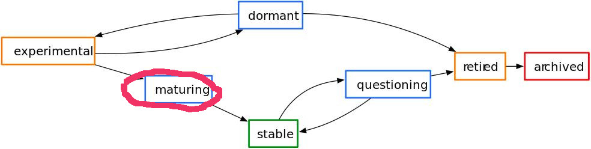
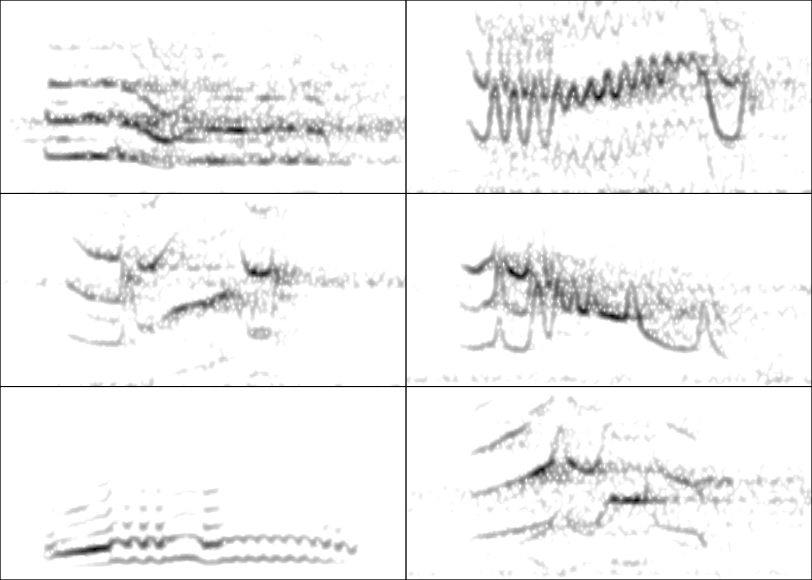
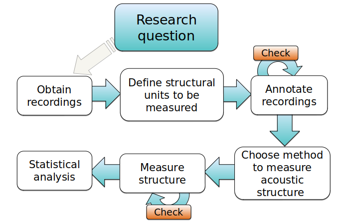

Provide and overview of the must relevant tools in the package warbleR
The warbleR package is intended to facilitate the analysis of the structure of animal acoustic signals in R. Users can enter their own data into a workflow that facilitates spectrographic visualization and measurement of acoustic parameters warbleR makes use of the fundamental sound analysis tools of the seewave package, and offers new tools for acoustic structure analysis. These tools are available for batch analysis of acoustic signals.
The main features of the package are:
The use of loops to apply tasks through acoustic signals referenced in a selection table:
The production of images files with spectrograms that let users organize data and verify acoustic analyzes:
Explore, organize and manipulate multiple sound files
Detect signals automatically (in frequency and time)
Create spectrograms of complete recordings or individual signals
Run different measures of acoustic signal structure
Evaluate the performance of measurement methods
Catalog signals
Characterize different structural levels in acoustic signals
Statistical analysis of duet coordination
Consolidate databases and annotation tables
Most functions allow the parallelization of tasks, which distributes the tasks among several cores to improve computational efficiency. Tools to evaluate the performance of the analysis at each step are also available. All these tools are provided in a standardized workflow for the analysis of the signal structure, making them accessible to a wide range of users, including those without much knowledge of R.
warbleR is a young package (officially published in 2017) currently in a maturation stage:

1 Selection tables
These objects are created with the selection_table() function. The function takes data frames containing selection data (name of the sound file, selection, start, end …), verifies if the information is consistent (see the function check_sels() for details) and saves the ‘diagnostic’ metadata as an attribute. The selection tables are basically data frames in which the information contained has been corroborated so it can be read by other warbleR functions. The selection tables must contain (at least) the following columns:
sound files (sound.files)
selection (select)
start
end
The sample data “lbh_selec_table” contains these columns:
Code
data("lbh_selec_table")lbh_selec_table
sound.files
channel
selec
start
end
bottom.freq
top.freq
Phae.long1.wav
1
1
1.1693549
1.3423884
2.220105
8.604378
Phae.long1.wav
1
2
2.1584085
2.3214565
2.169437
8.807053
Phae.long1.wav
1
3
0.3433366
0.5182553
2.218294
8.756604
Phae.long2.wav
1
1
0.1595983
0.2921692
2.316862
8.822316
Phae.long2.wav
1
2
1.4570585
1.5832087
2.284006
8.888027
Phae.long3.wav
1
1
0.6265520
0.7577715
3.006834
8.822316
Phae.long3.wav
1
2
1.9742132
2.1043921
2.776843
8.888027
Phae.long3.wav
1
3
0.1233643
0.2545812
2.316862
9.315153
Phae.long4.wav
1
1
1.5168116
1.6622365
2.513997
9.216586
Phae.long4.wav
1
2
2.9326920
3.0768784
2.579708
10.235116
Phae.long4.wav
1
3
0.1453977
0.2904966
2.579708
9.742279
… and can be converted to the selection_table format like this:
Code
# global parameterswarbleR_options(wav.path ="./examples")st <-selection_table(X = lbh_selec_table, pb =FALSE)st
sound.files
channel
selec
start
end
bottom.freq
top.freq
Phae.long1.wav
1
1
1.1693549
1.3423884
2.220105
8.604378
Phae.long1.wav
1
2
2.1584085
2.3214565
2.169437
8.807053
Phae.long1.wav
1
3
0.3433366
0.5182553
2.218294
8.756604
Phae.long2.wav
1
1
0.1595983
0.2921692
2.316862
8.822316
Phae.long2.wav
1
2
1.4570585
1.5832087
2.284006
8.888027
Phae.long3.wav
1
1
0.6265520
0.7577715
3.006834
8.822316
Phae.long3.wav
1
2
1.9742132
2.1043921
2.776843
8.888027
Phae.long3.wav
1
3
0.1233643
0.2545812
2.316862
9.315153
Phae.long4.wav
1
1
1.5168116
1.6622365
2.513997
9.216586
Phae.long4.wav
1
2
2.9326920
3.0768784
2.579708
10.235116
Phae.long4.wav
1
3
0.1453977
0.2904966
2.579708
9.742279
Note that the path to the sound files has been provided. This is necessary in order to verify that the data provided conforms to the characteristics of the audio files.
Selection tables have their own class in R:
Code
class(st)
[1] "selection_table" "data.frame"
1.1 Extended selection tables
When the extended = TRUE argument the function generates an object of the extended_selection_table class that also contains a list of ‘wave’ objects corresponding to each of the selections in the data. Therefore, the function transforms the selection table into self-contained objects since the original sound files are no longer needed to perform most of the acoustic analysis in warbleR. This can greatly facilitate the storage and exchange of (bio)acoustic data. In addition, it also speeds up analysis, since it is not necessary to read the sound files every time the data is analyzed.
Now, as mentioned earlier, you need the selection_table() function to create an extended selection table. You must also set the argument extended = TRUE (otherwise, the class would be a selection table). The following code converts the sample data into an extended selection table:
* A data frame (check.results) with 11 rows generated by check_sels() (as attribute)
The selection table was created by element (see 'class_extended_selection_table')
* 1 sampling rate(s) (in kHz): 22.5
* 1 bit depth(s): 16
* Created by warbleR 1.1.30
Code
# are they equal?all.equal(ext_st, ext_st5)
[1] "Attributes: < Component \"call\": target, current do not match when deparsed >"
The ‘wave’ objects can be read individually using read_wave(), a wrapper for the readWave() function of tuneR, which can handle extended selection tables:
Code
wv1 <-read_wave(X = ext_st, index =3, from =0, to =0.37)
These are regular ‘wave’ objects:
Code
class(wv1)
[1] "Wave"
attr(,"package")
[1] "tuneR"
Code
wv1
Wave Object
Number of Samples: 8325
Duration (seconds): 0.37
Samplingrate (Hertz): 22500
Channels (Mono/Stereo): Mono
PCM (integer format): TRUE
Bit (8/16/24/32/64): 16
par(mfrow =c(3, 2), mar =rep(0, 4))for(i in1:6){ wv <-read_wave(X = ext_st, index = i, from =0.05, to =0.32)spectro(wv, wl =150, grid =FALSE, scale =FALSE, axisX =FALSE,axisY =FALSE, ovlp =90)}
The read_wave() function requires the selection table, as well as the row index (i.e. the row number) to be able to read the ‘wave’ objects. It can also read a regular ‘wave’ file if the path is provided.
Note that other functions that modify data frames are likely to delete the attributes in which the ‘wave’ objects and metadata are stored. For example, the merge and the extended selection box will remove its attributes:
Code
# create new data baseY <-data.frame(sound.files = ext_st$sound.files, site ="La Selva", lek =c(rep("SUR", 5), rep("CCL", 6)))# combinemrg_ext_st <-merge(ext_st, Y, by ="sound.files")# check classis_extended_selection_table(mrg_ext_st)
[1] FALSE
In this case, we can use the fix_extended_selection_table() function to transfer the attributes of the original extended selection table:
Code
# fixmrg_ext_st <-fix_extended_selection_table(X = mrg_ext_st, Y = ext_st)# check classis_extended_selection_table(mrg_ext_st)
[1] TRUE
This works as long as some of the original sound files are retained and no other selections are added.
& nbsp;
1.3 Selection table size
The size of the extended selection box will depend on the number of selections, the sampling rate, the duration of the selection and the length of margins (i.e. additional time you want to keep on each side of the selection). In this example, a selection table with 1000 selections is created simply by repeating the sample data frame several times and then is converted to an extended selection table:
* A data frame (check.results) with 1000 rows generated by check_sels() (as attribute)
The selection table was created by element (see 'class_extended_selection_table')
* 1 sampling rate(s) (in kHz): 22.5
* 1 bit depth(s): 16
* Created by warbleR 1.1.30
Code
format(object.size(lng_ext_st), units ="auto")
[1] "31.4 Mb"
As you can see, the object size is only ~ 31 MB. Then, as a guide, a selection box with 1000 selections similar to those of ‘lbh_selec_table’ (average duration of ~ 0.15 seconds) at a sampling rate of 22.5 kHz and the default margin (mar = 0.1) will generate an extended selection box ~ 31 MB or ~ 310 MB for a selection table of 10,000 rows.
1.4 Analysis using extended selection tables
These objects can be used as input for most warbleR functions. Here are some examples of warbleR functions using extended_selection_table:
measuring dominant frequency contours (step 1 of 2):
Measuring fundamental frequency:
calculating DTW distances (step 2 of 2, no progress bar):
Code
as.data.frame(dtw.dist)
Phae.long1.wav_1-1
Phae.long1.wav_2-1
Phae.long1.wav_3-1
Phae.long2.wav_1-1
Phae.long2.wav_2-1
Phae.long3.wav_1-1
Phae.long3.wav_2-1
Phae.long3.wav_3-1
Phae.long4.wav_1-1
Phae.long4.wav_2-1
Phae.long4.wav_3-1
Phae.long1.wav_1-1
0.0000
8.6272
4.3390
16.6319
16.6161
13.8153
15.6860
15.5245
18.6621
20.8855
21.5606
Phae.long1.wav_2-1
8.6272
0.0000
6.9803
22.1235
29.1274
16.7363
22.3731
23.0249
15.8250
16.6372
19.4517
Phae.long1.wav_3-1
4.3390
6.9803
0.0000
18.2558
20.5344
15.2054
18.4506
16.4662
17.2609
19.1440
21.1586
Phae.long2.wav_1-1
16.6319
22.1235
18.2558
0.0000
12.1572
10.3686
11.2207
12.0419
12.4495
13.5389
15.3083
Phae.long2.wav_2-1
16.6161
29.1274
20.5344
12.1572
0.0000
6.7586
5.3403
8.6988
17.5231
20.5990
18.9194
Phae.long3.wav_1-1
13.8153
16.7363
15.2054
10.3686
6.7586
0.0000
3.6377
4.4201
13.2529
15.6284
15.6699
Phae.long3.wav_2-1
15.6860
22.3731
18.4506
11.2207
5.3403
3.6377
0.0000
3.6451
13.6515
15.9499
14.4185
Phae.long3.wav_3-1
15.5245
23.0249
16.4662
12.0419
8.6988
4.4201
3.6451
0.0000
11.0352
13.7203
12.3019
Phae.long4.wav_1-1
18.6621
15.8250
17.2609
12.4495
17.5231
13.2529
13.6515
11.0352
0.0000
5.3861
5.8845
Phae.long4.wav_2-1
20.8855
16.6372
19.1440
13.5389
20.5990
15.6284
15.9499
13.7203
5.3861
0.0000
6.2030
Phae.long4.wav_3-1
21.5606
19.4517
21.1586
15.3083
18.9194
15.6699
14.4185
12.3019
5.8845
6.2030
0.0000
1.5 Performance
The use of extended_selection_table objects can improve performance (in our case, measured as time). Here we use microbenchmark to compare the performance of sig2noise() and ggplot2 to plot the results:
Code
# load packageslibrary(microbenchmark)library(ggplot2)# take first 100 selectionsmbmrk.snr <-microbenchmark(extended =sig2noise(lng_ext_st[1:100, ], mar =0.05), regular =sig2noise(lng.selec.table[1:100, ], mar =0.05), times =50)autoplot(mbmrk.snr) +ggtitle("sig2noise")
The function runs much faster in the extended selection tables. Performance gain is likely to improve when longer recordings and data sets are used (that is, to compensate for computer overload).
1.6 Create selections ‘by song’
The extended selection above were made by element. That is, each sound file within the object contains a single selection (that is, a 1: 1 correspondence between the selections and the ‘wave’ objects). However, extended selection tables can also be created using a higher hierarchical level with the argument by.song. In this case, “song” represents a higher level that contains one or more selections and that the user may want to keep together for a particular analysis (for example, the duration of the intervals). The by.song argument takes the name of the column of characters or factors with the IDs of the different” songs “within a sound file (note that the function assumes that a given song can only be found in only one sound file, so the selections with the same song ID, but from different sound files are taken as different ‘songs’).
To create a selection table by song, let’s add an artificial song column to our example data in which each of the sound files has 2 songs:
Warning: 'confirm.extended' has been deprecated and will be ignored
checking selections (step 1 of 2):
saving wave objects into extended selection table (step 2 of 2):
In this case, we should only have 8 ‘wave’ objects instead of 11 as when the object was created ‘by selection’:
Code
# by elementlength(attr(ext_st, "wave.objects"))
[1] 11
Code
# by songlength(attr(bs_ext_st, "wave.objects"))
[1] 8
Again, these objects can also be used in any analyzes:
Code
# signal to noise ratiobs_snr <-sig2noise(bs_ext_st, mar =0.05)bs_snr
sound.files
channel
selec
start
end
bottom.freq
top.freq
song
SNR
Phae.long1.wav-song_1
1
1
0.100000
0.2730334
2.220105
8.604378
1
21.17229
Phae.long1.wav-song_1
1
2
1.089054
1.2521016
2.169437
8.807053
1
20.37064
Phae.long1.wav-song_2
1
1
0.100000
0.2749187
2.218294
8.756604
2
19.18211
Phae.long2.wav-song_1
1
1
0.100000
0.2325709
2.316862
8.822316
1
23.27961
Phae.long2.wav-song_2
1
1
0.100000
0.2261502
2.284006
8.888027
2
26.21774
Phae.long3.wav-song_1
1
1
0.100000
0.2312195
3.006834
8.822316
1
25.34264
Phae.long3.wav-song_1
1
2
1.447661
1.5778402
2.776843
8.888027
1
25.51089
Phae.long3.wav-song_2
1
1
0.100000
0.2312170
2.316862
9.315153
2
24.68619
Phae.long4.wav-song_1
1
1
0.100000
0.2454249
2.513997
9.216586
1
27.61899
Phae.long4.wav-song_2
1
1
2.887294
3.0314808
2.579708
10.235116
2
28.88520
Phae.long4.wav-song_2
1
2
0.100000
0.2450989
2.579708
9.742279
2
24.30149
Exercise
Compare the size of an extended selection table created by element to that of one created by song using the sample data
1.7 Sharing acoustic data
This new object class allows to share complete data sets, including acoustic data. For example, the following code downloads a subset of the data used in Araya-Salas et al (2017) (can also be downloaded from here):
Code
URL <-"https://github.com/maRce10/OTS_BIR_2024/raw/master/data/extended.selection.table.araya-salas.et.al.2017.bioacoustics.100.sels.rds"dat <-readRDS(gzcon(url(URL)))nrow(dat)format(object.size(dat), units ="auto")
[1] 100
[1] "10.1 Mb"
The total size of the 100 sound files from which these selections were taken adds up to 1.1 GB. The size of the extended selection table is only 10.1 MB.
This data is ready to be used:
Code
sp <-spectro_analysis(dat, bp =c(2, 10))head(sp)
sound.files
selec
duration
meanfreq
sd
freq.median
freq.Q25
freq.Q75
freq.IQR
time.median
time.Q25
time.Q75
time.IQR
skew
kurt
sp.ent
time.ent
entropy
sfm
meandom
mindom
maxdom
dfrange
modindx
startdom
enddom
dfslope
meanpeakf
Pyrrhura rupicola Macaulay Library 132 .wav_2
1
0.1504762
4.662762
1.767083
4.279070
3.435216
5.647841
2.212625
0.0654244
0.0392547
0.1046791
0.0654244
2.619410
12.031225
0.9236435
0.9508231
0.8782216
0.5423756
3.753955
2.024121
6.847559
4.823437
5.375000
4.521973
2.024121
-16.599644
4.020775
0.CCE.1971.4.4.ITM70863A-23.wav_1
1
0.1655637
6.254850
1.648434
6.350453
5.601209
7.202417
1.601209
0.0827778
0.0382051
0.1209829
0.0827778
2.380005
10.144155
0.9397550
0.9410405
0.8843475
0.6327902
6.585970
3.574512
8.225684
4.651172
3.685185
8.225684
6.933691
-7.803594
6.096101
0.SAT.1989.6.2.ITM70866A-32.wav_5
1
0.1542514
6.093311
1.645878
5.844408
4.904376
7.393841
2.489465
0.0835469
0.0449868
0.1156803
0.0706935
1.970903
7.268969
0.9391274
0.9432334
0.8858163
0.6084129
6.234293
3.316113
8.139551
4.823437
3.214286
6.416894
3.316113
-20.102130
7.047292
23.CCE.2011.7.21.7.42.wav_6
1
0.1549551
5.415047
1.463110
5.167742
4.419355
6.425807
2.006452
0.0645692
0.0387415
0.1033107
0.0645692
2.107408
8.054270
0.9227024
0.9447503
0.8717234
0.5060075
5.028434
2.368652
7.795020
5.426367
2.158730
7.364356
2.368652
-32.239682
4.366662
Cyanoliseus patagonus Macaulay Library 79 .wav_5
1
0.1598866
3.153826
1.225681
2.569195
2.243941
3.651290
1.407350
0.0639546
0.0383728
0.0959320
0.0575592
4.547286
29.491407
0.8230714
0.9356593
0.7701144
0.1265239
2.590610
2.024121
4.435840
2.411719
3.071429
2.454785
2.282519
-1.077424
2.291336
0.HC1.2011.8.7.9.20.wav_4
1
0.1537989
6.029456
1.757841
6.416260
4.920325
7.183740
2.263415
0.0769048
0.0448611
0.1089484
0.0640873
4.161163
27.901632
0.9288549
0.9459573
0.8786571
0.6043575
6.254965
4.952637
8.570215
3.617578
4.071429
5.383301
4.952637
-2.800177
4.971966
… and the spectrograms can be visualized as follows:
Code
par(mfrow =c(3, 2), mar =rep(0, 4))for(i in1:6){ wv <-read_wave(X = dat, index = i, from =0.17, to =0.4)spectro(wv, wl =250, grid =FALSE, scale =FALSE, axisX =FALSE,axisY =FALSE, ovlp =90, flim =c(0, 12), palette = reverse.gray.colors.1)}

The NatureSounds package contains an extended selection table with long-billed hermit hummingbirds vocalizations from 10 different song types:
The ability to compress large data sets and the ease of performing analyzes that require a single R object can simplify the exchange of data and the reproducibility of bioacoustic analyzes.
Exercise
Download the extended selection tables of bat social calls from the this figshare repository (scroll till the end of the file list) and create spectrograms for the first 5 selections of each table (either spectrograms() or spectro() would work)
2warbleR functions and the workflow of analysis in bioacoustics
Bioacoustic analyzes generally follow a specific processing sequence and analysis. This sequence can be represented schematically like this:

We can group warbleR functions according to the bioacoustic analysis stages.
2.1 Get and prepare recordings
The query_xc() function allows you to search and download sounds from the free access database Xeno-Canto. You can also convert .mp3 files to .wav, change the sampling rate of the files and correct corrupt files, among other functions.
extract recording parameters from multiple wave files
multiple wave files
data frame
2.2 Annotating sound
It is recommended to make annotations in other programs and then import them into R (for example in Raven and import them with the Rraven package). However, warbleR offers some functions to facilitate manual or automatic annotation of sound files, as well as the subsequent manipulation:
The annotations (or selection tables) can be manipulated and refined with a variety of functions. Selection tables can also be converted into the compact format extended selection tables:
Most warbleR functions are dedicated to quantifying the structure of acoustic signals listed in selection tables using batch processing. For this, 4 main measurement methods are offered:
Spectrographic parameters
Cross correlation
Dynamic time warping (DTW)
Statistical descriptors of cepstral coefficients
Most functions gravitate around these methods, or variations of these methods:
Compare the performance of spectro_analysis() on the example ‘lbh_selec_table’ with “the argument ‘fast = TRUE’ vs ‘fast = FALSE’. What does this argument do and which seewave function might be involved?
2.5 Verify annotations
Functions are provided to detect inconsistencies in the selection tables or modify selection tables. The package also offers several functions to generate spectrograms showing the annotations, which can be organized by annotation categories. This allows you to verify if the annotations match the previously defined categories, which is particularly useful if the annotations were automatically generated.
Finally, warbleR offers functions to simplify the use of extended selection tables, organize large numbers of images with spectrograms and generate elaborated signal visualizations:
Run the examples of the functions phylo_spectro() and color_spectro()
Use the query_xc() and map_xc() functions to explore the geographical distribution of the Xeno-Canto recordings of a species (of bird) of your interest (if any!)
3 References
Araya-Salas M, G Smith-Vidaurre & M Webster. (2017). Assessing the effect of sound file compression and background noise on measures of acoustic signal structure. Bioacoustics 4622, 1–17
Araya-Salas M, Smith-Vidaurre G (2017) warbleR: An R package to streamline analysis of animal acoustic signals. Methods Ecol Evol 8:184–191.